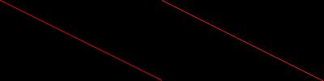

(PHP 4 >= 4.3.2, PHP 5, PHP 7, PHP 8)
imageantialias — 是否使用抗锯齿（antialias）功能
$image, bool $enabled): bool对线段和多边形启用快速画图抗锯齿方法。不支持 alpha 部分。使用直接混色操作。仅用于真彩色图像。
不支持线宽和风格。
使用抗锯齿和透明背景色可能出现未预期的结果。混色方法把背景色当成任何其它颜色使用。缺乏 alpha 部分的支持导致不允许基于 alpha 抗锯齿方法。
成功时返回 true， 或者在失败时返回 false。
示例 #1 A comparison of two lines, one with anti-aliasing switched on
<?php
// Setup an anti-aliased image and a normal image
$aa = imagecreatetruecolor(400, 100);
$normal = imagecreatetruecolor(200, 100);
// Switch antialiasing on for one image
imageantialias($aa, true);
// Allocate colors
$red = imagecolorallocate($normal, 255, 0, 0);
$red_aa = imagecolorallocate($aa, 255, 0, 0);
// Draw two lines, one with AA enabled
imageline($normal, 0, 0, 200, 100, $red);
imageline($aa, 0, 0, 200, 100, $red_aa);
// Merge the two images side by side for output (AA: left, Normal: Right)
imagecopymerge($aa, $normal, 200, 0, 0, 0, 200, 100, 100);
// Output image
header('Content-type: image/png');
imagepng($aa);
imagedestroy($aa);
imagedestroy($normal);
?>
以上例程的输出类似于：
